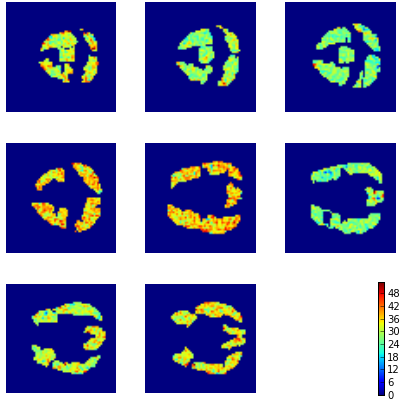
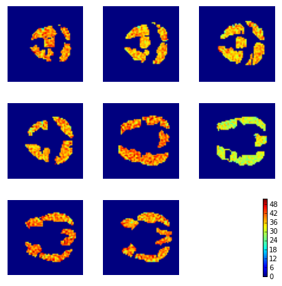

Biology: Determining Cognitive States Using fMRI Data
Posted 7 days agoData Source: http://www.cs.cmu.edu/afs/cs.cmu.edu/project/theo-81/www/
In this post, we reproduce the analysis of fMRI data to see if we can determine the cognitive state of a subject when they are either viewing (1) a sentence or (2) a picture. fMRI snapshots were taken and the activity of 4698 voxels (3D pixels) were used as columns for analysis. Naive bayes was used for analysis. Although individual snapshots are not independent, prediction using trained model yielded an accuracy of 0.94871. Below are the aggregated values of snapshots labelled as 'Picture' or 'Sentence'.
Picture Viewed by Subject

Sentence Viewed by Subject

#Imports used from scipy.io import loadmat import numpy as np import pandas as pd from matplotlib import pyplot as plt from sklearn.naive_bayes import GaussianNB
#Read in Data
ids = ['04820']
total_data = []
data = loadmat('data-starplus-' + ids[0] + '-v7.mat')
meta = data['meta'][0][0]
info = data['info'][0]
colToCoord = meta[0]
labeled_data = []
for trial in xrange(meta[6]):
#Ignore rest periods in data
if info[trial][0][0][0] in [2, 3]:
#Determine whether trial started with a picture or sentence
testType = info[trial][13][0]
voxes = data['data'][trial][0]
for i in xrange(len(voxes)):
if i/10 == 0:
labeled_data.append((voxes[i], testType))
total_data = total_data + labeled_data
X = pd.DataFrame(map(lambda x: x[0], total_data))
y = np.array(map(lambda x: x[1], total_data))
#Create Test Data mask = np.random.rand(len(y)) < 0.8 X_train = X[mask] X_test = X[~mask] y_train = y[mask] y_test = y[~mask]
#Run Naive Bayes gnb = GaussianNB() y_pred = gnb.fit(X_train, y_train).predict(X_test) print sum(y_pred == y_test)/float(len(y_test))
def recreateImages(temp_image, layer):
img = np.zeros((64, 64))
snap = temp_image
#Normalize image values
maxActiv = max(snap)
minActiv = min(snap)
snap = snap - minActiv
snap = (snap * 63/(maxActiv - minActiv)) + 1
for i in xrange(len(snap)):
coords = colToCoord[i]
if coords[2] == layer:
img[coords[0]][coords[1]] = snap[i]
plt.imshow(img, cmap='jet')
plt.axis('off')
translation = {'P': 'Picture Shown', 'S': 'Sentence Shown'}
for i in ['P', 'S']:
to_img = X_test[y_pred == i]
plt.figure(figsize = (6, 6))
for j in xrange(1, 9):
loc = '33' + str(j)
plt.subplot(loc)
recreateImages(to_img.mean(axis=0), j)
#Add colorbar
plt.subplot('339')
plt.axis('off')
plt.colorbar()
plt.tight_layout()
plt.show()